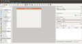
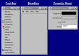
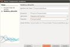
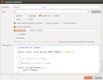

| Recurso (1) | Datos del recurso (1) | Recurso (2) | Datos del recurso (2) |
|---|---|---|---|
|
Autoría: pgbrandolin. Licencia: CC BY-CN-SA 3.0. Procedencia: http://www.openclipart.org/image/800px/svg_to_png/pgb-chip-packetproc.png |
Autoría: warszawianka. Licencia: Dominio público. Procedencia: http://openclipart.org/detail/36085/tango-font-x-generic-by-warszawianka |
||
|
Autoría: warszawianka. Licencia: Dominio público. Procedencia: http://openclipart.org/detail/35383/tango-applications-graphics-by-warszawianka |
Autoría: warszawianka. Licencia: Dominio público. Procedencia: http://openclipart.org/detail/34177/tango-mail-reply-all-by-warszawianka |
||
|
Autoría: warszawianka. Licencia: Dominio público. Procedencia: http://www.openclipart.org/detail/32407/tango-edit-find-by-warszawianka |
 |
Autoría: Nokia. Licencia: GNU GPL. Procedencia: Captura de pantalla de la herramienta QT Designer . |
|
|
Autoría: warszawianka. Licencia: Dominio público. Procedencia: http://www.openclipart.org/detail/32245/tango-documnet-save-by-warszawianka |
Autoría: warszawianka. Licencia: Dominio público. Procedencia: http://www.openclipart.org/image/800px/svg_to_png/document-open.png |
||
|
Autoría: Silveira Neto. Licencia: CC by-sa. Procedencia: http://www.flickr.com/photos/silveiraneto/2579658422/ |
 |
Autoría: java.sun.com. Licencia: Copyright (cita), se autoriza el uso sin restricciones. Procedencia: http://www.javaworld.com/javaworld/jw-09-1997/jw-09-beanbox.html |
|
|
Autoría: Oracle. Licencia: Copyright (cita). Procedencia: http://netbeans.org |
Autoría: warszawianka. Licencia: Dominio público. Procedencia: http://openclipart.org/detail/35347/tango-system-users-by-warszawianka |
||
|  |
Autoría: María José Navascués González. Licencia: GNU GPL. Procedencia: Captura de pantalla de la aplicación NetBeans de Oracle. |
 |
Autoría: María José Navascués González. Licencia: GNU GPL. Procedencia: Captura de pantalla de la aplicación NetBeans de Oracle. |
|
Autoría: Warszawiankak. Licencia: Dominio público. Procedencia: http://openclipart.org/detail/35533/tango-emblem-system-by-warszawianka |
Autoría: warszawianka. Licencia: Dominio público. Procedencia: http://openclipart.org/detail/36145/tango-package-x-generic-by-warszawianka |